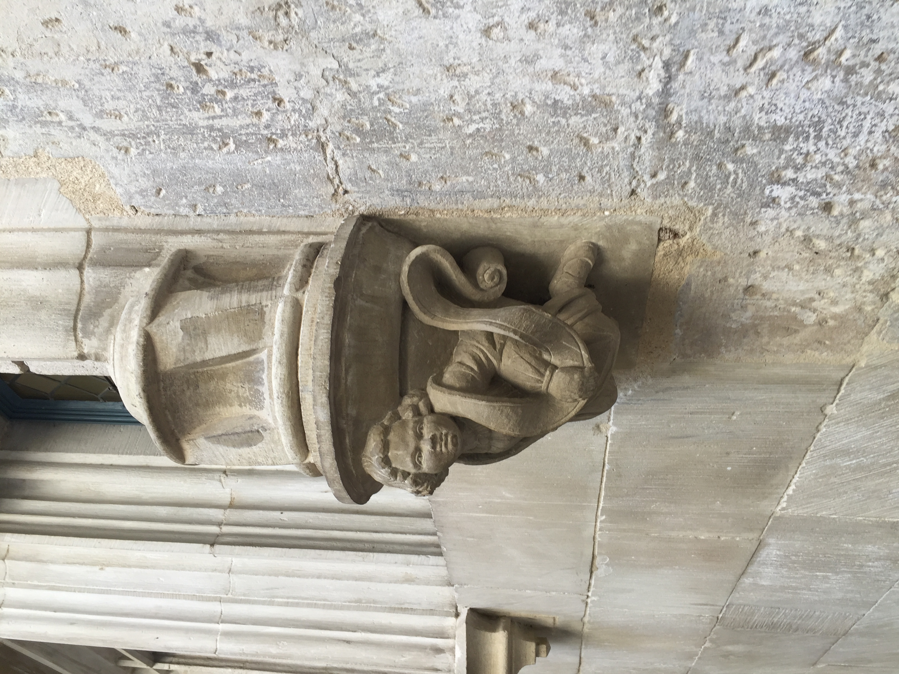
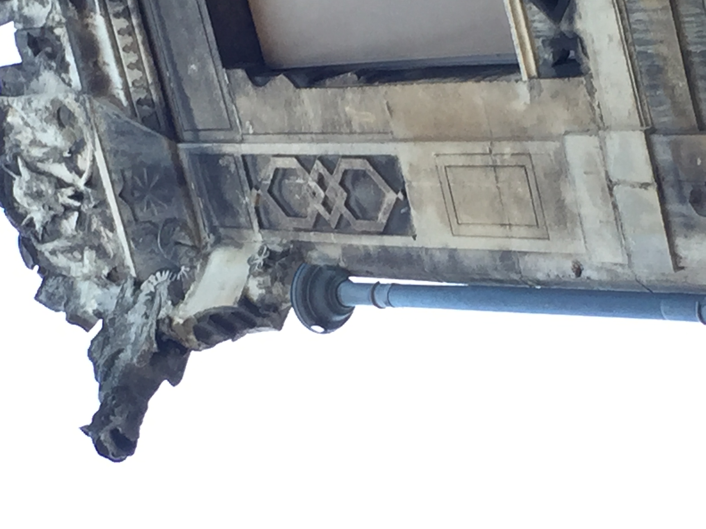
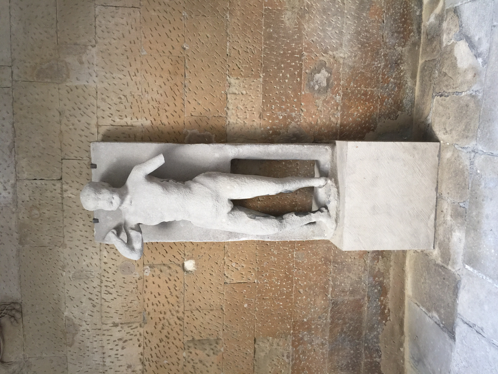
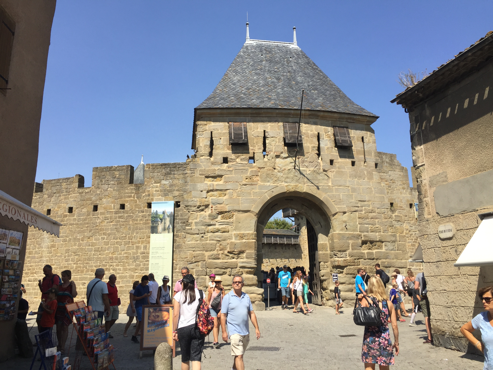
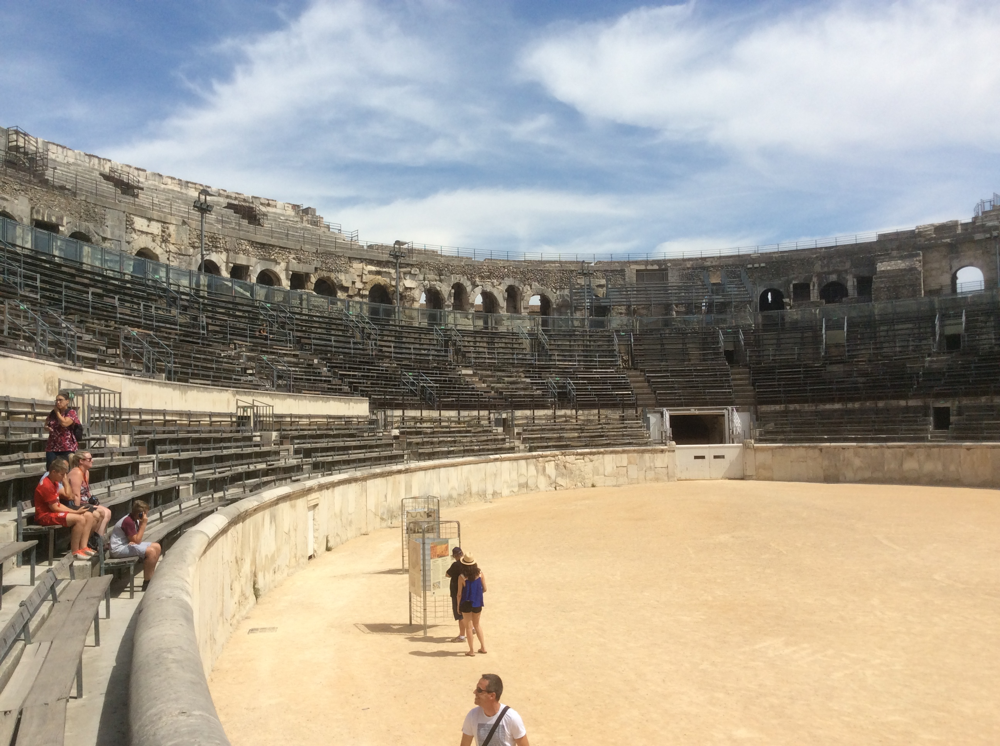
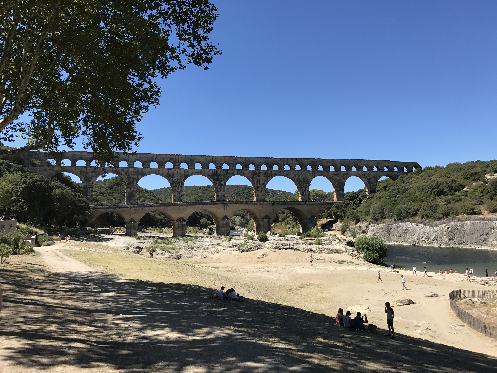
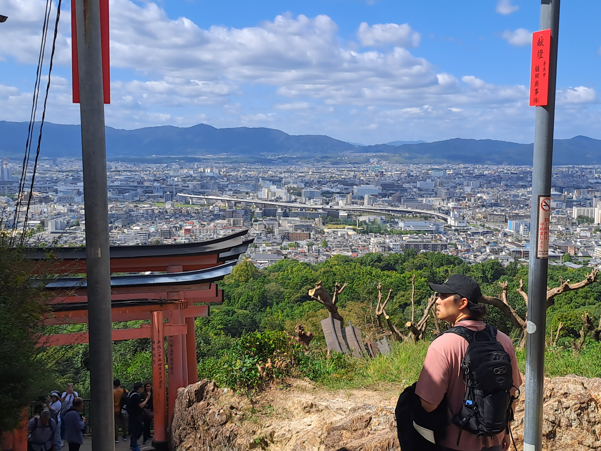

Some photos I took during the years
Valence


Church Gargoyles
I am in love with Gargoyles. They are fantastic, most of the times there are no 2 similar gargolyles in churches.

Church Statue
Carcassonne

View of the Cite
Nimes


Les Arenes de Nimes et le Pont du Gard
Two photos from Japan


Kyoto seen from a distance, from Mount Inari and a Buddha statue from the initial steps of the same mountain.